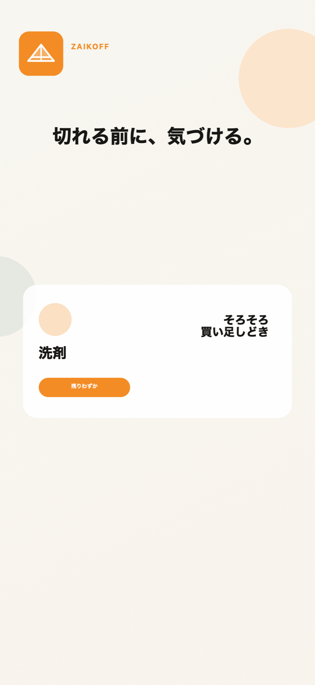

バーコードで登録
JANコードを読み取り、消耗品を在庫リストへ追加します。
Zaikoff
ザイコフ
HOME INVENTORY · 暮らし
バーコードで消耗品を登録し、在庫切れ前の通知から再購入までつなぐ在庫管理アプリです。


JANコードを読み取り、消耗品を在庫リストへ追加します。
在庫あり、残りわずか、在庫切れを見分けやすく表示します。
消費サイクルをもとに、切れそうな時期を知らせます。
在庫切れの商品をAmazonなどの購入先で探せます。
Made for you